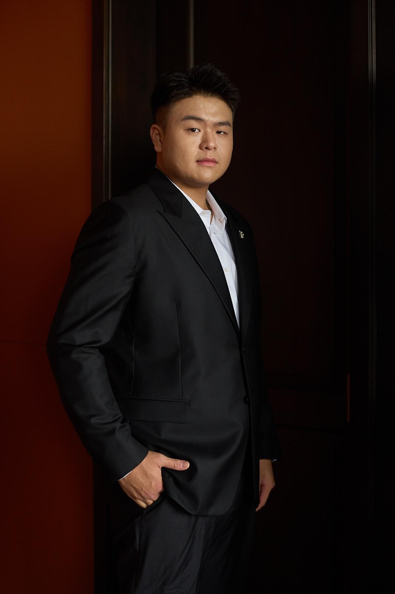

Sourcing & procurement
Live
OrcaTrade Sourcing
Asia procurement & quality control — the original business. End-to-end from supplier scouting to shipment.
OrcaTrade Group connects European buyers with Asian manufacturers through sourcing, intelligence, search, finance, and ocean-backed commerce — four focused units operating under one vision: make global trade transparent, efficient, and trustworthy.
OrcaTrade Group was founded on a simple belief: global trade should work better. European businesses deserve reliable access to Asia's manufacturing capability — without friction, opacity, or risk.
Each unit addresses a distinct layer of the global trade stack.
Asia procurement & quality control — the original business. End-to-end from supplier scouting to shipment.
AI-powered trade OS for supply chain clarity, factory risk scoring, and regulatory compliance.
Paid factory discovery engine — find verified manufacturers across Asia by category, country and MOQ.
Trade finance & cross-border payment facilitation for European importers sourcing from Asia.
Real leadership across sourcing, technology, logistics, and finance.
Founded by UCL graduates who identified a persistent gap in how European businesses access Asian manufacturing.

Jay leads sourcing strategy and supplier partnerships across Asia, ensuring every program is delivered with consistent quality, clear communication and dependable timelines.
Supplier network · Quality-first execution · Transparent planning
Arman leads high-touch client communication and relationship building, bringing energy, confidence and a polished brand presence to every partnership conversation.
Client relationships · Brand presence · Partnership growth
Yiu oversees shipment planning and execution across sea and air routes, keeping delivery schedules, documents and handovers aligned from factory release to final destination.
Freight coordination · Timeline control · Documentation flow
Oskar oversees European operations and financial planning, ensuring commercial decisions, client delivery and cross-border execution stay aligned with sustainable growth targets.
European operations · Financial strategy · Cross-border execution
Sea freight rates from Shanghai and Ningbo are normalising after months of volatility, offering importers a brief window before summer peak demand returns. Carriers are cautiously restoring capacity on Europe-bound lanes, with spot rates settling into a more predictable range.
The EUDR introduces strict due diligence requirements for goods linked to deforestation entering the EU market. Companies sourcing timber, soy, cocoa, and derived products must provide georeferenced data and compliance statements. Early preparation is critical.
Supply chain diversification is accelerating as European buyers reduce single-country dependency. Vietnam leads in garments and electronics assembly while Malaysia strengthens in semiconductors and precision parts. Dual-sourcing strategies are becoming standard practice.
China's National Day Golden Week (1–7 October) brings factory shutdowns across major manufacturing hubs. Importers targeting Q4 deliveries should confirm orders by early August. Failure to account for the pre-holiday rush routinely leads to inflated lead times and missed windows.
Fill in the brief below and we'll respond within one business day.
Our Offices:
Warsaw, Poland
London, United Kingdom
Hong Kong
Operating hours: CET, GMT & China Standard Time
We typically reply within one business day.